Subject classification, not a new website selection. Original images are unchanged. Click a preview to open its source file. HEIC originals may need Preview on macOS.
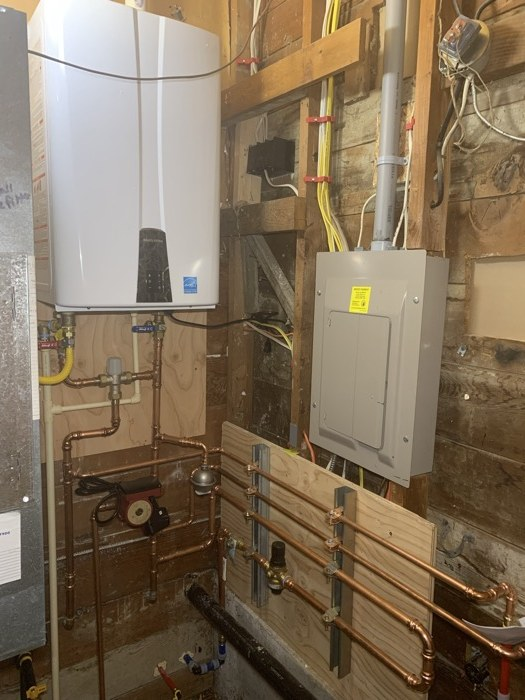
001 · Wall-mounted Navien appliance and copper distribution pipework
needs-review · medium confidence · usable
IMG_0026.HEIC
general-plumbing/system-overview
The cabinet, circulation pump, valves and copper distribution are visible. The model and served circuits do not establish whether the appliance is a boiler, combi or domestic tankless heater.
Clear pipework; tight framing, electrical panel and unfinished wall compete with the appliance.
What is the appliance model, and does it supply domestic hot water, space heating or both?
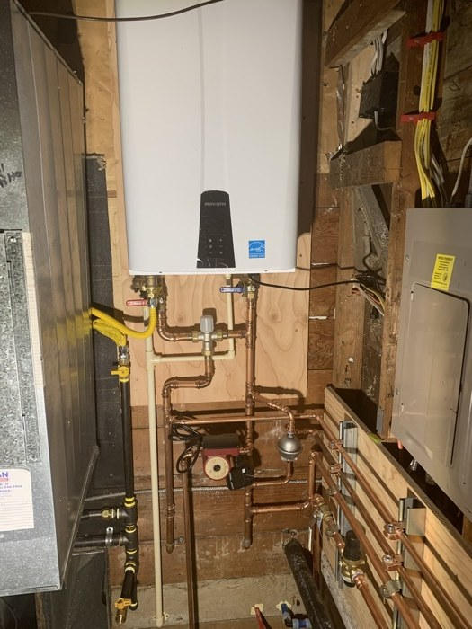
002 · Wall-mounted Navien appliance with circulation pump and copper connections
needs-review · medium confidence · usable
IMG_0028.HEIC
general-plumbing/system-overview
A larger original confirms the Navien brand and visible circulation equipment but provides no readable model label or complete circuit routing.
Good view of the connections; the cabinet top and adjacent equipment are cropped.
What is the appliance model, and does it supply domestic hot water, space heating or both?
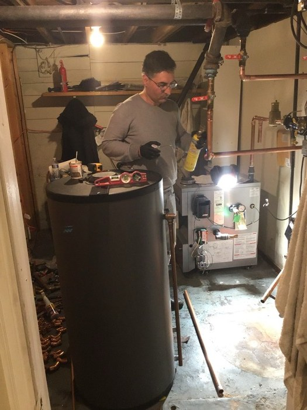
003 · Worker holding a torch beside a floor-standing boiler and storage cylinder
classified · high confidence · usable
IMG_0240.HEIC
about/on-the-job, boilers/system-overview
A worker holds a torch among tools. The floor-standing boiler has a flue, water connections, controls and pressure gauge. No specific repair or annual-service activity is established.
Recognizable worker and equipment; work-light glare, clutter and a foreground cylinder obscure part of the system.
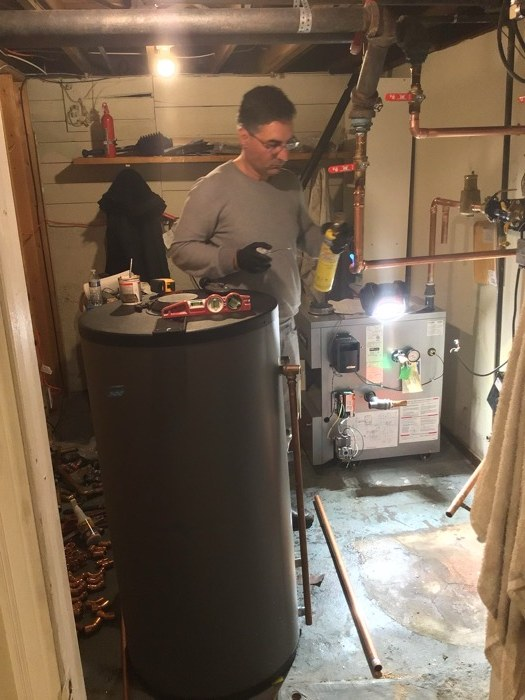
004 · Worker holding a torch beside a floor-standing boiler and storage cylinder
classified · high confidence · usable
IMG_0241.HEIC
about/on-the-job, boilers/system-overview
The worker, torch and tools establish a job-site scene. The boiler, flue, water connections and gauge are visible behind the cylinder.
Near-identical composition to ID 3; bright work light and foreground cylinder limit the view.
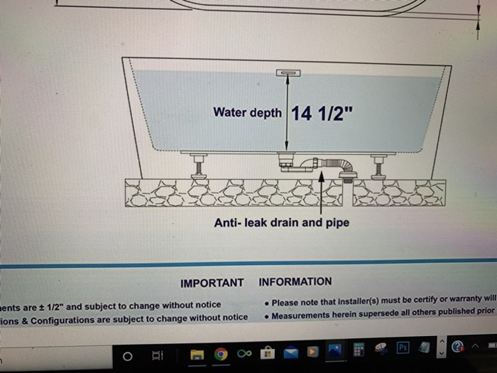
005 · Photograph of a bathtub installation diagram on a computer screen
not-for-website · high confidence · reference-only
IMG_0316.HEIC
general-plumbing/showers-and-tubs
The screen displays a bathtub diagram with water-depth and drain annotations, rather than an installed project.
Screen photograph with taskbar, cropped text and document graphics.
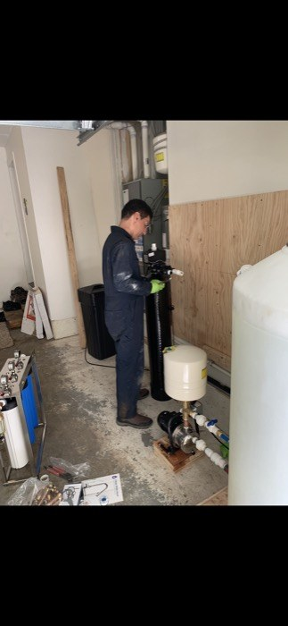
006 · Phone screenshot of a worker beside water-treatment and storage equipment
not-for-website · high confidence · reference-only
IMG_0319.PNG
about/on-the-job, water-filtration/water-softeners, water-filtration/system-overview, general-plumbing/water-filtration-systems
A worker stands beside a controlled treatment vessel, adjacent brine tank, cartridge housings and a storage tank with pump.
Large black borders and phone home indicator identify a screenshot; equipment is partly cropped.
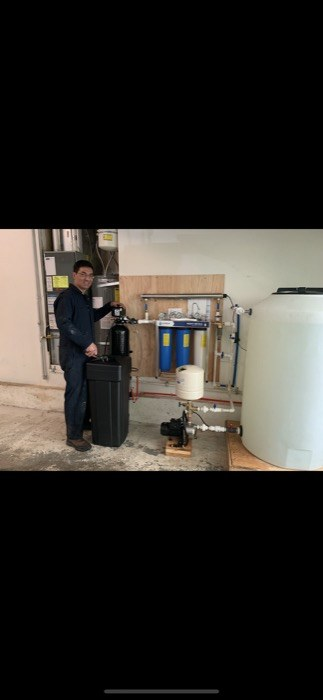
007 · Phone screenshot of a worker presenting a water-treatment system
not-for-website · high confidence · reference-only
IMG_0320.PNG
about/on-the-job, water-filtration/water-softeners, water-filtration/system-overview, general-plumbing/water-filtration-systems
The treatment vessel, separate brine tank, cartridge filter housings, storage tank and worker are visible.
Phone screenshot with black borders and home indicator; an original view exists in this batch.
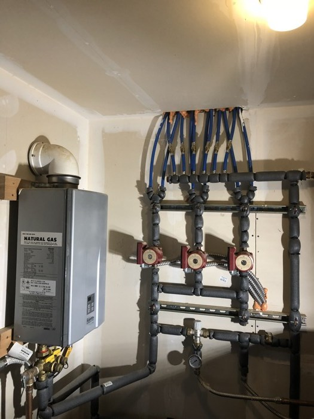
008 · Hydronic distribution assembly with three circulation pumps
classified · high confidence · usable
IMG_0427.HEIC
boilers/hydronic-heating
Three circulators feed paired branches from common insulated supply and return headers. A pressure gauge and fill connection support the heating-circuit assignment; no floor loops are shown.
The complete pump bank is visible; harsh overhead light and unfinished walls reduce presentation quality.
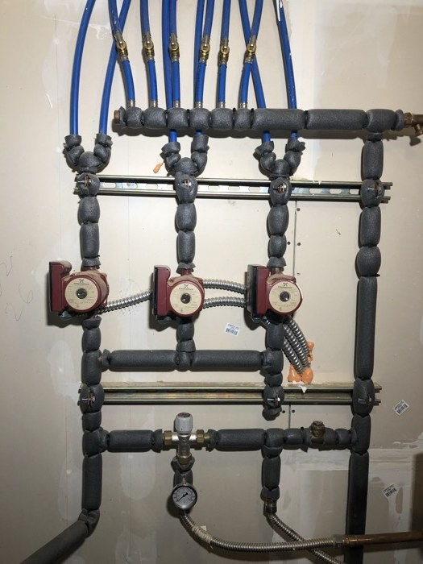
009 · Three-zone hydronic circulation and distribution pipework
classified · high confidence · strong
IMG_0428.HEIC
boilers/hydronic-heating
Three wired circulators, paired circuit branches, common insulated headers, pressure gauge and fill assembly identify hydronic distribution.
Clear, close view of the complete distribution assembly.
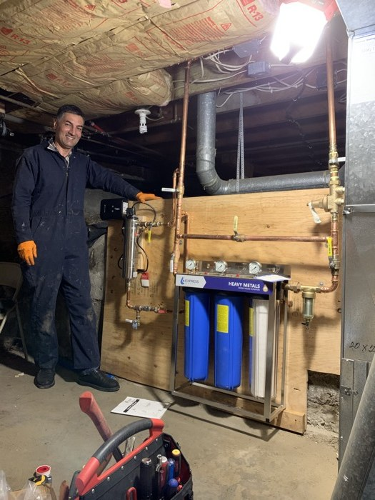
010 · Worker beside cartridge filtration and UV treatment equipment
classified · high confidence · usable
IMG_0546.HEIC
water-filtration/system-overview, water-filtration/uv-treatment, about/on-the-job, general-plumbing/water-filtration-systems
Three filter housings and gauges are visible beside a stainless UV chamber with lamp connection and electrical controller. The worker stands beside the equipment. The image does not identify cartridge media.
Useful worker-and-system composition; foreground tools and bright overhead light add clutter.
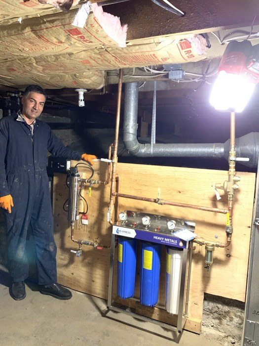
011 · Worker beside cartridge filtration and UV treatment equipment
classified · high confidence · usable
IMG_0547.HEIC
water-filtration/system-overview, water-filtration/uv-treatment, about/on-the-job, general-plumbing/water-filtration-systems
The cartridge bank, stainless UV chamber, electrical lead and controller are visible with the worker.
Complete equipment view; tilted framing and work-light glare at upper right.
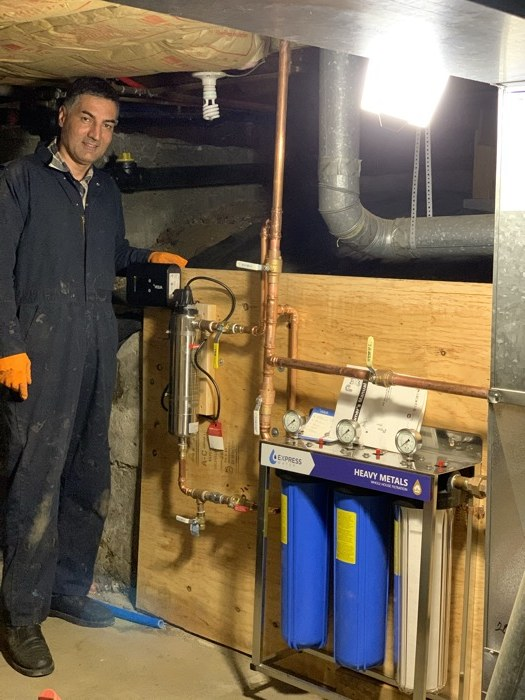
012 · Worker presenting a filtration bank and UV chamber
classified · high confidence · usable
IMG_0548.HEIC
water-filtration/system-overview, water-filtration/uv-treatment, about/on-the-job, general-plumbing/water-filtration-systems
Three housings and pressure gauges show cartridge filtration. The separate stainless chamber has its lamp lead and controller. The image provides no specific media evidence.
Clear equipment detail; worker is cropped and loose packaging rests on the filter bracket.
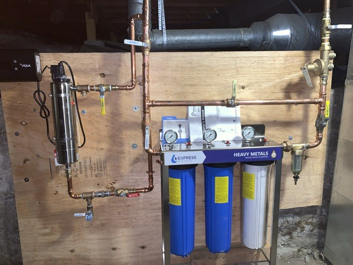
013 · Cartridge filter bank and VIQUA UV treatment assembly
classified · high confidence · strong
IMG_0552.HEIC
water-filtration/system-overview, water-filtration/uv-treatment, general-plumbing/water-filtration-systems
Three filter housings and gauges are visible. The stainless chamber and VIQUA electrical controller identify UV treatment. The heavy-metals label does not establish carbon or iron/sulfur media.
Sharp, direct equipment view; loose manuals on the bracket are a minor distraction.
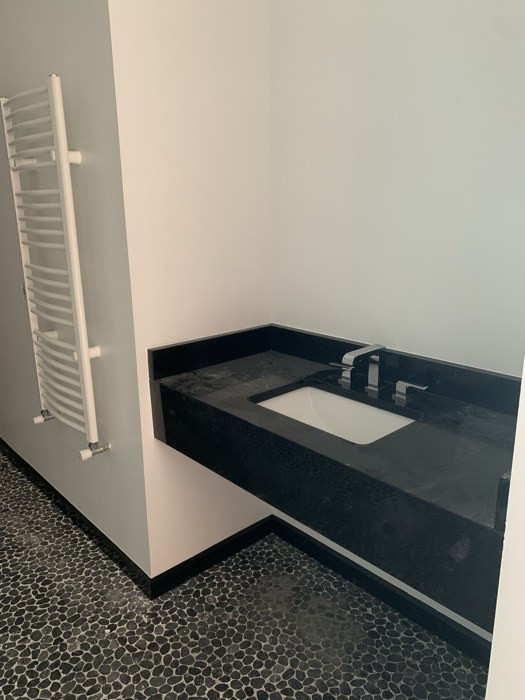
014 · Bathroom sink, faucet and piped towel radiator
classified · high confidence · strong
IMG_0653.HEIC
general-plumbing/faucets-fixtures-and-sinks, boilers/hydronic-heating
The sink and faucet are clear. The ladder radiator has two visible bottom valves and pipe connections into the wall, supporting a hydronic radiator assignment.
Clean finished-room composition with both fixtures visible.
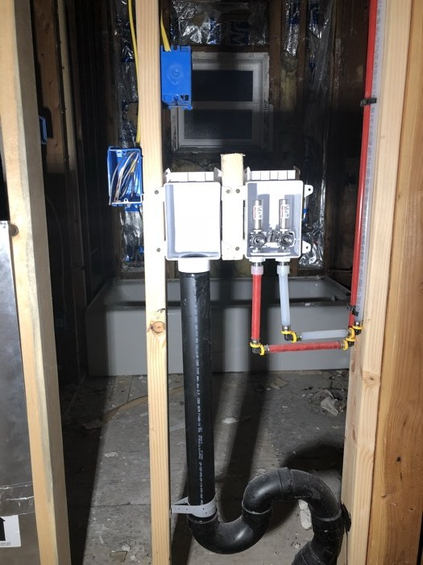
015 · Laundry supply valves, standpipe and drain trap in open framing
classified · high confidence · usable
IMG_0663.HEIC
general-plumbing/piping-and-repiping, drain-and-sewer/system-overview
Red and white supply lines terminate at a recessed laundry valve box beside a standpipe and visible drain trap. This is plumbing rough-in, with no leak or cleaning activity shown.
Clear rough-in detail; flash and exposed electrical boxes make it a construction-stage image.
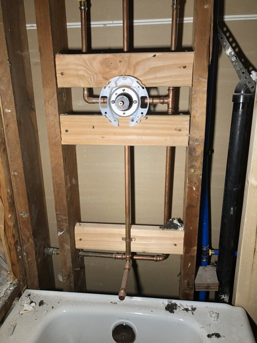
016 · Bathtub and shower mixing-valve rough-in
classified · high confidence · usable
IMG_0666.HEIC
general-plumbing/showers-and-tubs
A tub sits beneath the mixing valve, copper supplies and tub-spout stub in open studs.
Valve and pipe routing are clear; construction debris remains in the tub.
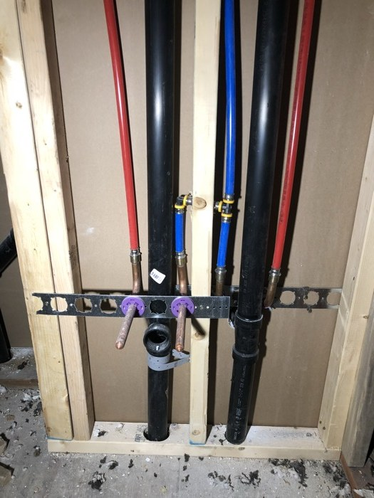
017 · Hot and cold supply stubs with drain and vent pipework
classified · high confidence · usable
IMG_0667.HEIC
general-plumbing/piping-and-repiping, drain-and-sewer/system-overview
Paired supply stubs and red/blue tubing are visible beside black drain and vent pipes in open framing.
Clear close-up of rough plumbing; limited context and exposed construction surfaces.
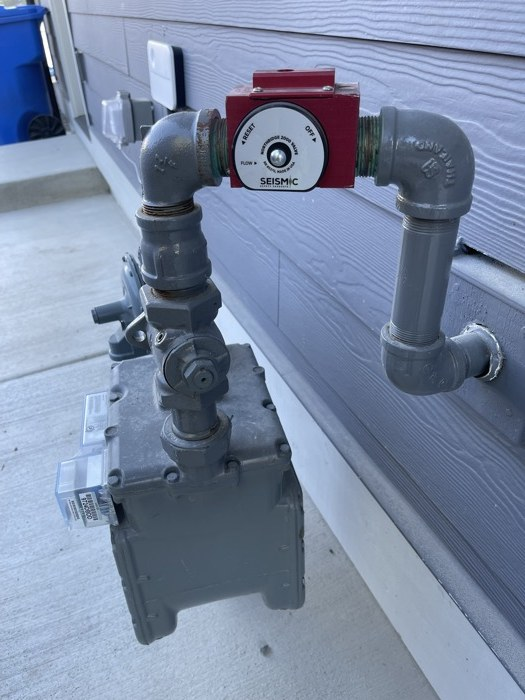
018 · Exterior gas meter piping and seismic shutoff valve
classified · high confidence · strong
IMG_0711.HEIC
general-plumbing/gas-line-repair-and-installation
The meter connects through threaded gas piping to a valve explicitly marked seismic with flow and reset indicators.
Sharp, uncluttered close-up; the meter body is partly cropped.
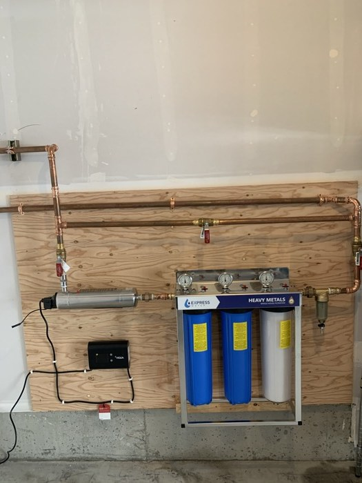
019 · Wall-mounted cartridge filtration and UV treatment system
classified · high confidence · strong
IMG_0754.HEIC
water-filtration/system-overview, water-filtration/uv-treatment, general-plumbing/water-filtration-systems
Three filter housings, gauges and bypass piping are visible. A horizontal stainless chamber connects by a lamp lead to a VIQUA controller.
Complete equipment view with clear piping; some empty wall space above.
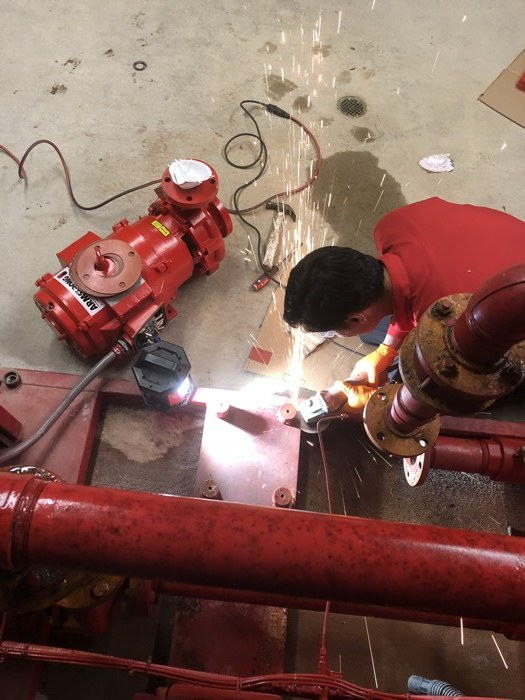
020 · Worker grinding metal beside a large pump assembly
classified · high confidence · usable
IMG_0781.HEIC
about/on-the-job
Visible sparks, grinder, pump, flanged pipework and removed equipment establish pump-related site work. They do not establish a boiler or sump-pump service.
Strong action detail; overhead angle and foreground pipe obscure the worker and full system.
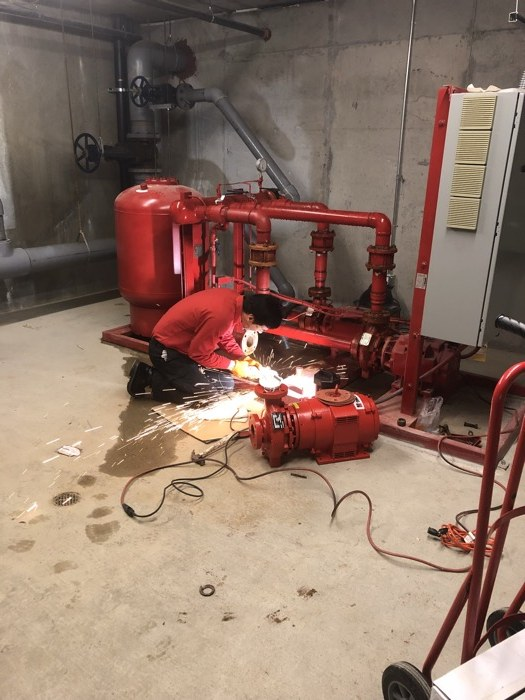
021 · Worker grinding beside a pump skid and pressure vessel
classified · high confidence · usable
IMG_0782.HEIC
about/on-the-job
The worker operates a grinder beside pumps, flanged piping, pressure vessel and controls. The system's end use is not identified.
Wide action view shows the equipment; scattered tools and cables add clutter.
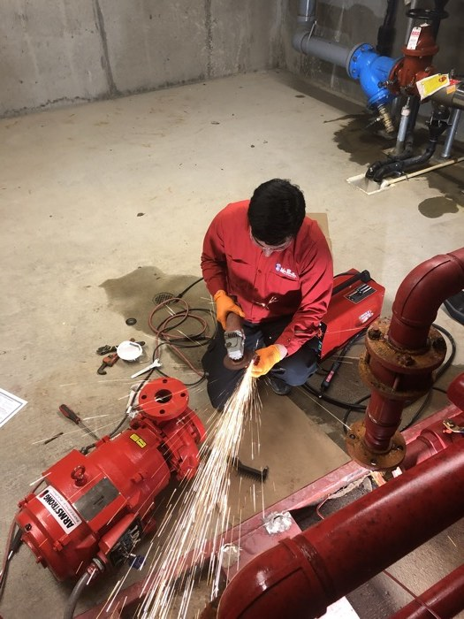
022 · Worker grinding a metal component beside pumping equipment
classified · high confidence · usable
IMG_0788.HEIC
about/on-the-job
Grinding sparks and the handheld tool show active work beside a pump and flanged pipe assembly.
Clear action and worker; high camera angle and pipe crop limit system context.
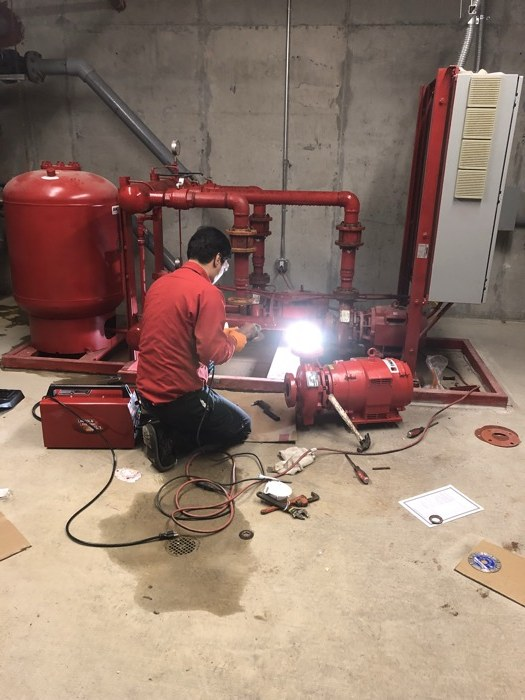
023 · Worker welding beside a pump skid
classified · high confidence · usable
IMG_0789.HEIC
about/on-the-job
A welding arc and leads are visible at the pump assembly, with a pressure vessel and flanged distribution piping behind it.
Useful wide work scene; welding glare and loose floor tools reduce detail.
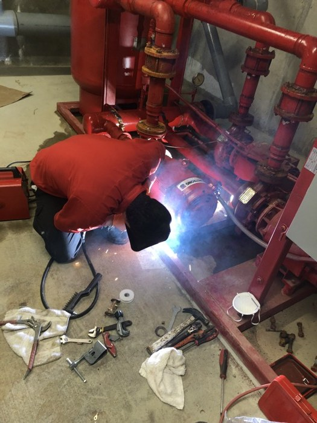
024 · Worker welding at a pump assembly
classified · high confidence · usable
IMG_0792.HEIC
about/on-the-job
The welding arc, shield, leads and pump pipework establish visible equipment work without identifying a specific heating or sump application.
Close action view; glare, smoke and floor tools compete with the subject.
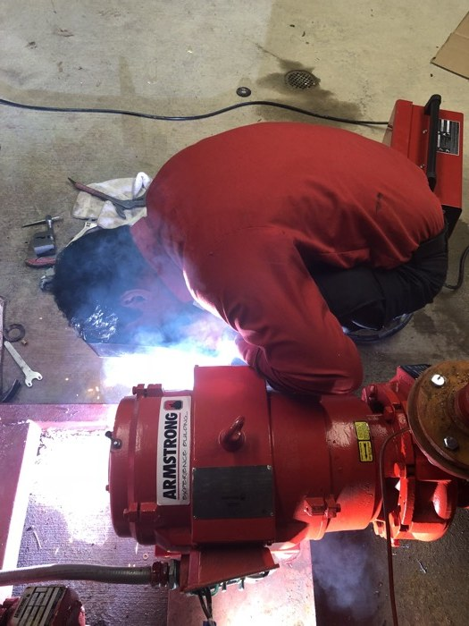
025 · Close-up of a worker welding beside an Armstrong pump
classified · high confidence · usable
IMG_0795.HEIC
about/on-the-job
The pump label, flange, welding arc and worker's shield are visible. The equipment is not shown in a sump or an identified heating circuit.
Strong work detail; tight crop and arc glare hide the exact joint.
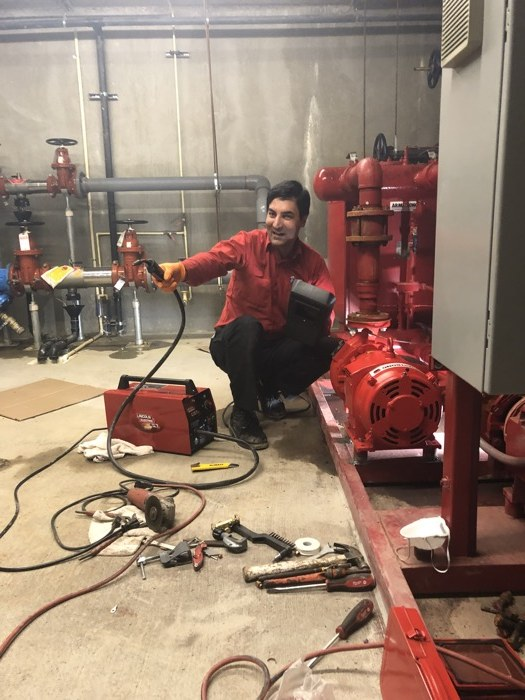
026 · Worker with welding equipment beside a pump skid
classified · high confidence · usable
IMG_0803.HEIC
about/on-the-job
The worker holds welding equipment beside large pumps, valves and connected piping.
Recognizable worker and tools; cables, floor clutter and a control cabinet obscure part of the system.
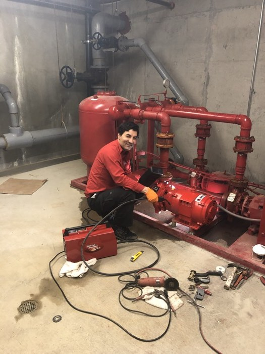
027 · Worker kneeling beside a pump and pressure-vessel assembly
classified · high confidence · usable
IMG_0804.HEIC
about/on-the-job
The worker, welding machine, pump, flanged headers and pressure vessel are visible together.
Good worker-and-equipment view; many loose tools in the foreground.
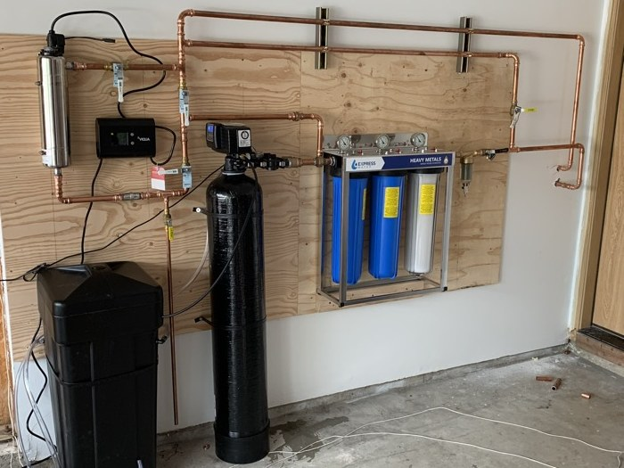
028 · Water softener, UV chamber and cartridge filtration bank
classified · high confidence · strong
IMG_0890.HEIC
water-filtration/water-softeners, water-filtration/uv-treatment, water-filtration/system-overview, general-plumbing/water-filtration-systems
A treatment vessel with control head connects to a separate brine tank. A stainless chamber connects to a VIQUA controller. Three cartridge housings form a separate filter bank.
Complete, well-lit system with readable routing; loose floor wiring is a minor distraction.
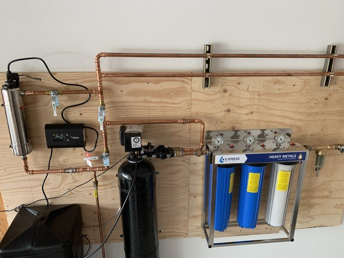
029 · Water softener control head, UV treatment and cartridge filters
classified · high confidence · strong
IMG_0891.HEIC
water-filtration/water-softeners, water-filtration/uv-treatment, water-filtration/system-overview, general-plumbing/water-filtration-systems
The vessel's control head and brine-tank connection support the softener assignment. The stainless chamber and VIQUA controller establish UV treatment; cartridges have no confirmed media identity.
Sharp equipment detail; bottoms of the tanks and filter housings are cropped.
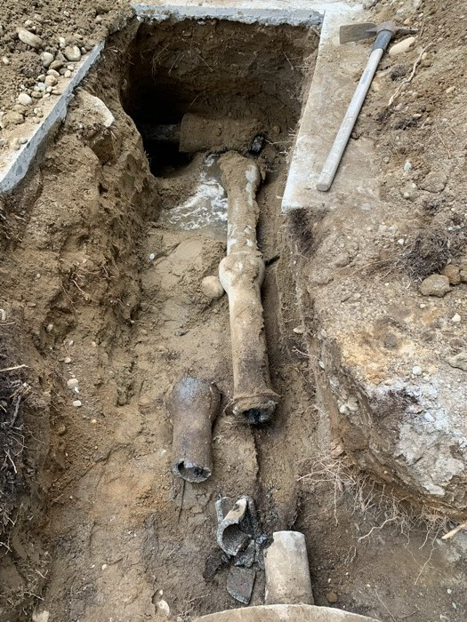
030 · Excavated, separated clay drain pipe
classified · high confidence · usable
IMG_0902.HEIC
drain-and-sewer/sewer-line-repair-and-replacement
Large bell-jointed clay drain sections, broken fragments and disconnected ends are exposed in an open excavation. No trenchless equipment is visible.
Clear pipe condition and excavation detail; dirt-covered surfaces limit contrast.
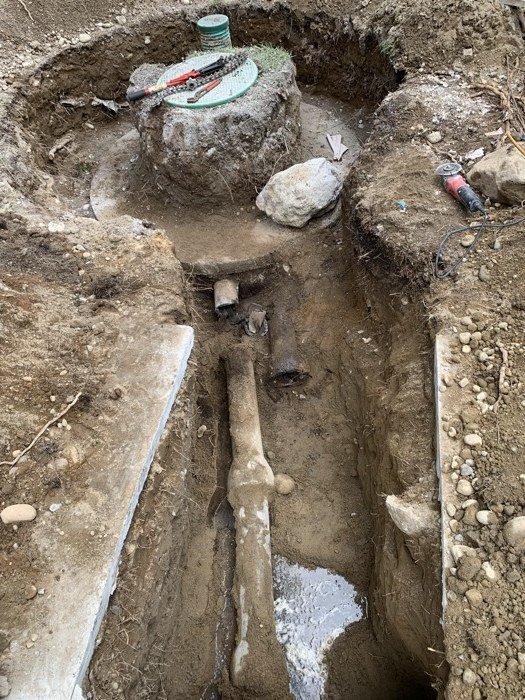
031 · Excavated clay drain pipe beside an access structure
classified · high confidence · usable
IMG_0907.HEIC
drain-and-sewer/sewer-line-repair-and-replacement
Disconnected bell-jointed drain sections and tools are visible in the opened trench beside a capped access structure.
Useful excavation context; uneven light and a narrow view make the pipe harder to read.
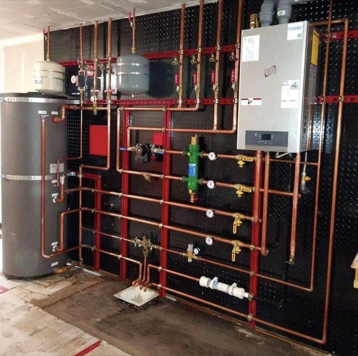
032 · Hydronic mechanical wall with zone valves, pump and expansion vessels
classified · high confidence · usable
IMG_1055.JPG
boilers/hydronic-heating
Multiple controlled heating branches, circulation equipment, expansion vessels and a hydraulic separation assembly identify hydronic distribution. The image does not establish floor heating or a service activity.
Wide view captures the system; moderate sharpness and cropped upper piping limit detail.
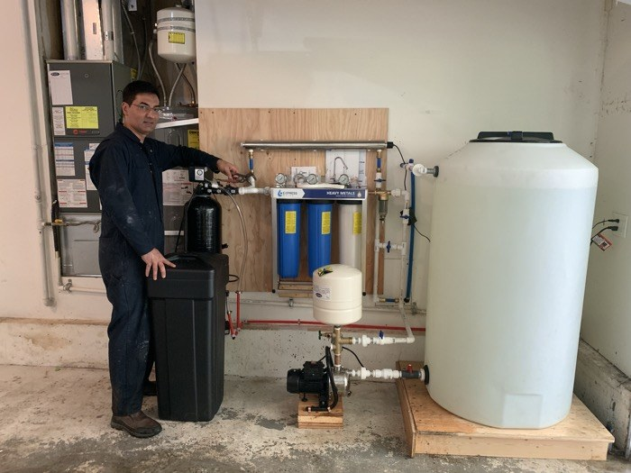
033 · Worker beside water softener, filtration, UV chamber and storage tank
classified · high confidence · strong
IMG_1113.HEIC
about/on-the-job, water-filtration/water-softeners, water-filtration/uv-treatment, water-filtration/system-overview, general-plumbing/water-filtration-systems
The worker stands beside a controlled treatment vessel and separate brine tank. Cartridge housings, an electrically connected horizontal stainless UV chamber, storage tank and pump are visible.
Clear original landscape view of the worker and complete treatment equipment.
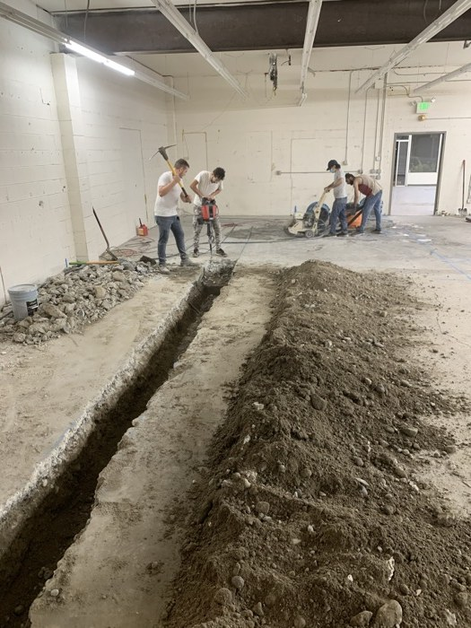
034 · Crew cutting and breaking an interior concrete floor
classified · high confidence · usable
IMG_1193.HEIC
about/on-the-job
Workers use concrete-cutting and breaking tools beside an open trench. No visible pipe establishes water-line or sewer service.
Wide view clearly shows site activity; distant workers and a large spoil pile dominate the frame.
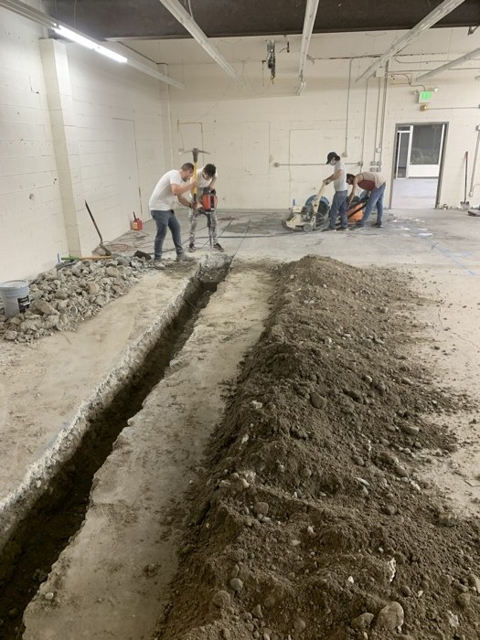
035 · Crew opening a trench through an interior concrete floor
classified · high confidence · usable
IMG_1194.HEIC
about/on-the-job
Workers, saw and breaker show floor excavation. No pipe or method-specific equipment supports a drain or trenchless assignment.
Clear work context; near-duplicate framing to IDs 34 and 36.
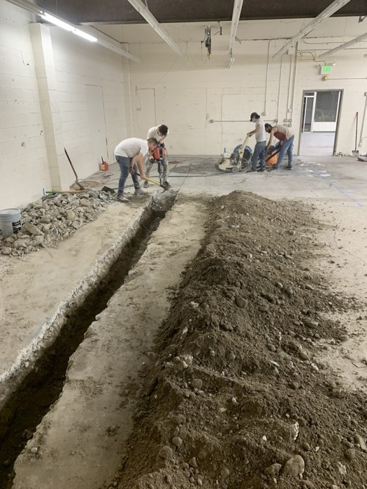
036 · Crew breaking concrete beside an interior trench
classified · high confidence · usable
IMG_1195.HEIC
about/on-the-job
The crew and concrete-breaking tools are visible; the empty trench does not identify the intended plumbing service.
Good activity context; distant people and foreground soil occupy most of the image.
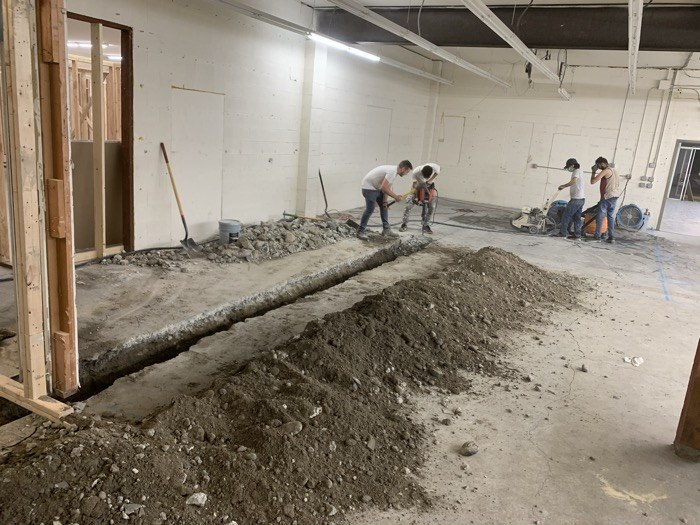
037 · Wide view of crew excavating an interior floor
classified · high confidence · usable
IMG_1196.HEIC
about/on-the-job
Workers, concrete tools, debris and an open trench establish site work, with no visible pipe to establish a service subtype.
Useful wide composition; workers are small and the foreground pile dominates.
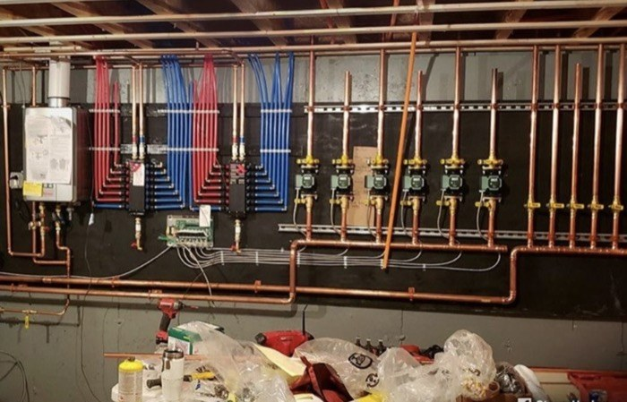
038 · Mechanical wall with a bank of hydronic circulation pumps
classified · high confidence · usable
IMG_1231.JPG
boilers/hydronic-heating
Multiple wired circulators connect parallel branches to common copper headers. This supports hydronic heating without establishing radiant-floor circuits or appliance model.
Broad view of distribution; moderate image sharpness and substantial foreground packaging clutter.
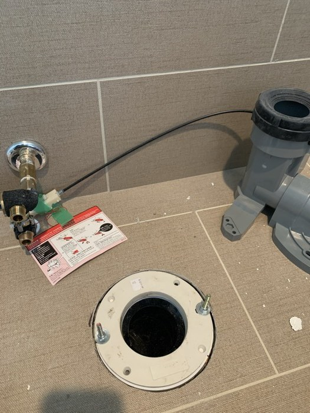
039 · Toilet floor flange, supply valve and detached outlet adapter
classified · high confidence · usable
IMG_1241.HEIC
general-plumbing/toilet-repair-and-installation
A bolted floor flange, toilet supply fitting and toilet outlet adapter are clearly visible on the tiled floor.
Sharp installation detail; the loose adapter is partly cropped and packaging remains nearby.
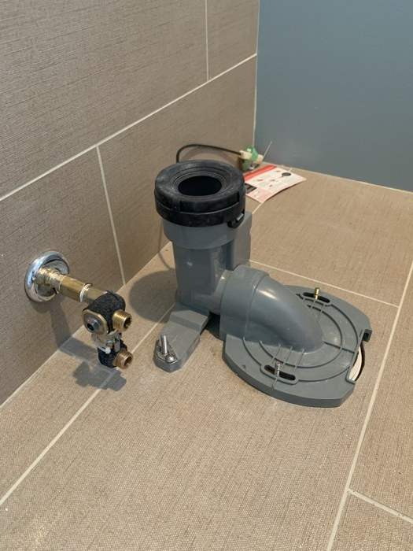
040 · Toilet outlet adapter positioned over a floor flange
classified · high confidence · strong
IMG_1243.HEIC
general-plumbing/toilet-repair-and-installation
The toilet outlet adapter sits at the flange beside the wall supply valve; fastening studs and mounting points are visible.
Clear close-up of the connection and supply hardware.
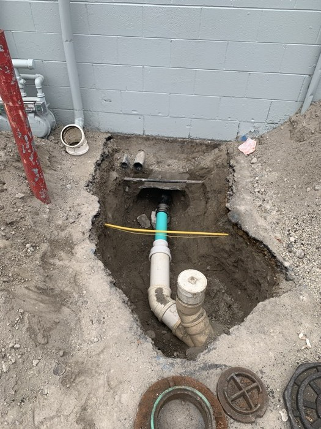
041 · Excavated sewer connection with replacement pipe and cleanout
classified · high confidence · usable
IMG_1328.HEIC
drain-and-sewer/sewer-line-repair-and-replacement
An exposed green replacement section joins existing drain pipe beside a capped cleanout in an open excavation.
Complete connection context; surrounding debris and adjacent utilities add clutter.
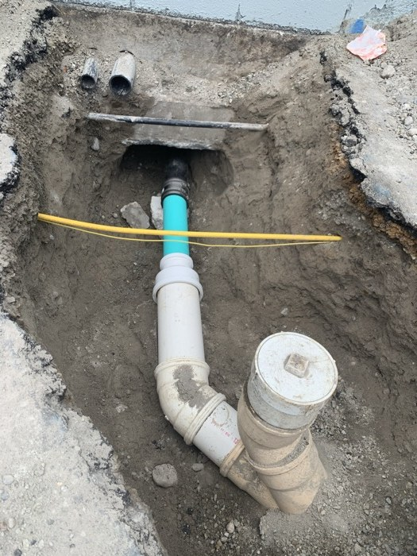
042 · Close-up of an excavated sewer connection and cleanout
classified · high confidence · strong
IMG_1329.HEIC
drain-and-sewer/sewer-line-repair-and-replacement
The green replacement section, joining coupling, drain bend and capped cleanout are visible in the excavated connection.
Sharp detail of the pipe connection with useful surrounding context.
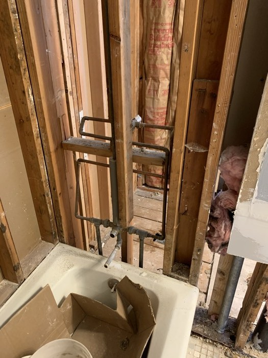
043 · Existing bathtub and exposed supply pipework
classified · high confidence · usable
IMG_1421.HEIC
general-plumbing/showers-and-tubs
A bathtub sits beneath exposed copper supply routing and a tub-spout stub in an opened wall.
Recognizable tub plumbing; debris and cardboard obscure much of the tub.
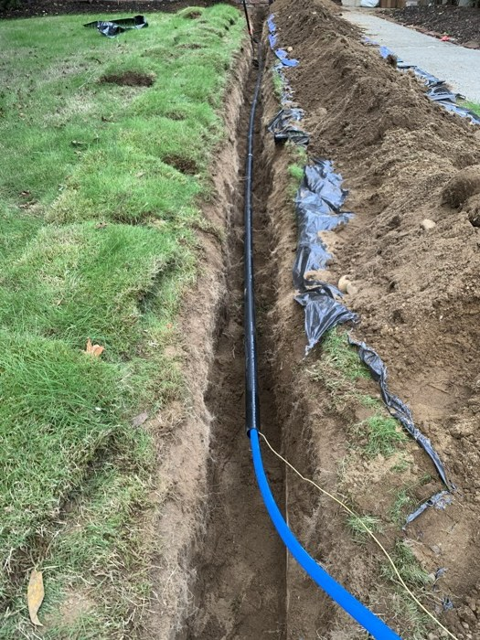
044 · Blue pressure pipe in a long open yard trench
classified · high confidence · usable
IMG_1446.HEIC
general-plumbing/piping-and-repiping
Small-diameter blue pipe runs through a sleeve in an excavated yard trench. The open trench provides no evidence of a trenchless method.
Clear pipe route and excavation; the far end lacks detail.
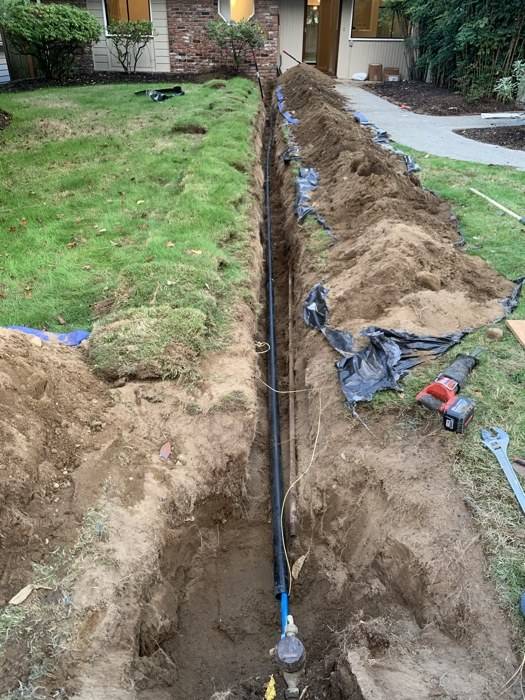
045 · Water supply pipe connection and long open trench
classified · high confidence · usable
IMG_1447.HEIC
general-plumbing/piping-and-repiping
Blue pressure pipe connects to a meter-side fitting and continues in a sleeve through the opened trench toward the building.
Good route context; background building and tools compete with the small pipe connection.
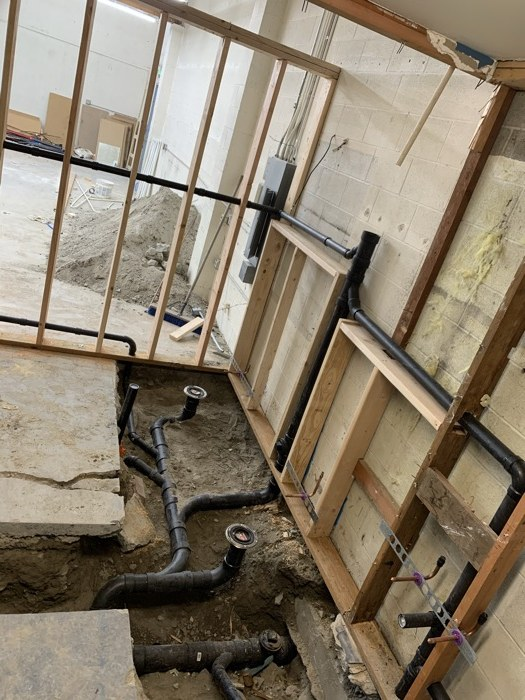
046 · Drain and vent rough-in beneath an opened concrete floor
classified · high confidence · usable
IMG_1612.HEIC
drain-and-sewer/system-overview, general-plumbing/piping-and-repiping
Black drain branches and vents run through open framing and floor channels; paired supply stubs are also visible. No cleaning or sewer-main repair activity is established.
Useful full routing view; tilted framing and construction debris reduce polish.
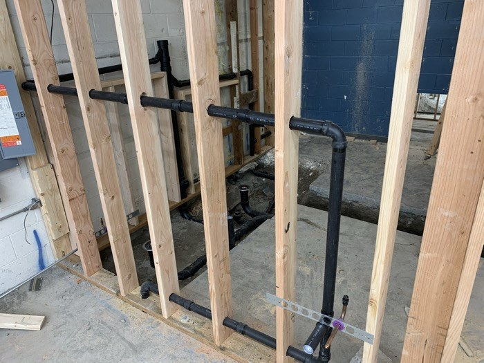
047 · Drain and vent branches through open wall framing
classified · high confidence · usable
IMG_1613.HEIC
drain-and-sewer/system-overview
Black drain and vent branches run through the studs and connect to below-floor rough-in. The image shows routing rather than a cleaning operation.
Clear pipe routing; foreground studs partly obscure the floor connections.
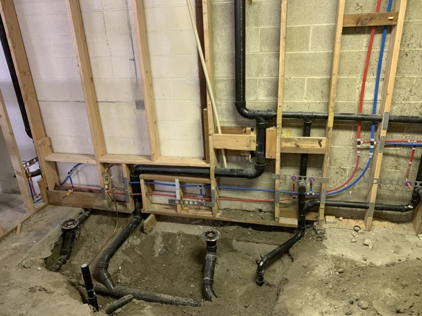
048 · Bathroom supply, drain and vent rough-in
classified · high confidence · usable
IMG_1650.HEIC
drain-and-sewer/system-overview, general-plumbing/piping-and-repiping
Black drain branches and vents connect below the opened floor. Red and blue supply tubing feeds stub-outs in the wall.
Clear wide view of both systems; unfinished framing and soil remain visible.
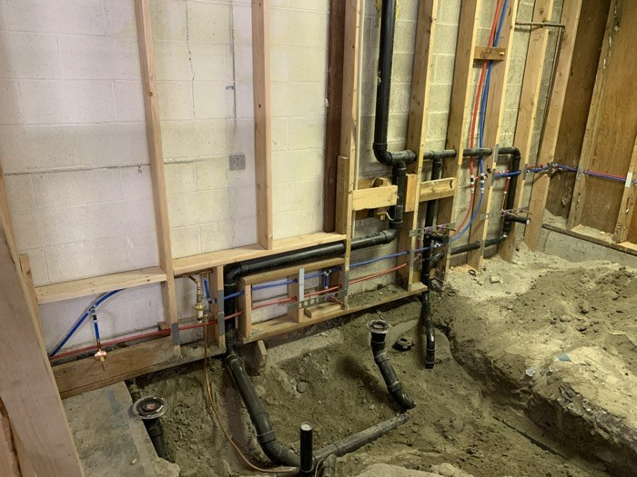
049 · Bathroom supply and drain rough-in in open framing
classified · high confidence · usable
IMG_1651.HEIC
drain-and-sewer/system-overview, general-plumbing/piping-and-repiping
Exposed black drainage branches, vent routing and paired red/blue water supplies establish the two visible systems.
Useful oblique view of routing; parts of the floor connections are cropped.
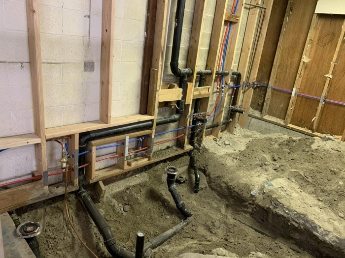
050 · Exposed drain branches and water supply rough-in
classified · high confidence · usable
IMG_1652.HEIC
drain-and-sewer/system-overview, general-plumbing/piping-and-repiping
Black drain and vent pipework shares the opened wall and floor with red/blue water-supply runs and fixture stub-outs.
Good system context; foreground dirt and cropped drain branches compete with the wall detail.

051 · Phone screenshot of water softener, cartridge filters and UV chamber
not-for-website · high confidence · reference-only
IMG_1677 2.PNG
water-filtration/water-softeners, water-filtration/uv-treatment, water-filtration/system-overview, general-plumbing/water-filtration-systems
The controlled vessel and brine tank, cartridge housings, stainless UV chamber and controller are visible within the screenshot.
Black borders and phone home indicator; use the original equipment photos instead.
052 · Phone screenshot of a water-treatment system close-up
not-for-website · high confidence · reference-only
IMG_1678.PNG
water-filtration/water-softeners, water-filtration/uv-treatment, water-filtration/system-overview, general-plumbing/water-filtration-systems
The screenshot shows the softener head and brine tank, cartridge filter bank and electrically connected UV chamber.
Large black borders, phone indicator and cropped tanks; original views are available.
053 · Vanity sink and wrapped faucet during construction
classified · high confidence · reference-only
IMG_1757.HEIC
general-plumbing/faucets-fixtures-and-sinks
The installed rectangular basin and faucet are visible in the vanity, although protective wrapping covers the faucet.
Packaging obscures the fixture and construction debris covers the foreground.
054 · Under-sink trap disconnected from the wall drain
classified · high confidence · reference-only
IMG_1758.HEIC
general-plumbing/faucets-fixtures-and-sinks, drain-and-sewer/system-overview
A sink tailpiece and white trap hang above an open wall drain connection, with supply shutoffs and hoses beside them. The image does not establish why it is disconnected.
Soft focus, dim cabinet interior and tight crop make this a technical reference image.
055 · Crew beside removed clay sewer pipe and replacement pipe sections
classified · high confidence · usable
IMG_1879.HEIC
drain-and-sewer/sewer-line-repair-and-replacement, about/on-the-job
Removed clay sewer sections, green replacement pipe and workers appear beside an open excavation.
Clear people-and-project context; foreground dirt and worker cropping reduce presentation quality.
056 · Replacement sewer branch joined to existing pipe in a trench
classified · high confidence · strong
IMG_1881.HEIC
drain-and-sewer/sewer-line-repair-and-replacement
A green drain line enters a wye joined to existing dark pipe with shielded couplings in an open trench.
Clear overhead view of the replacement connection and pipe route.
057 · Open-trench sewer replacement beneath a deck
classified · high confidence · usable
IMG_1885.HEIC
drain-and-sewer/sewer-line-repair-and-replacement, about/on-the-job
Green sewer pipe follows the opened trench beside removed clay drain sections; workers are visible at the far end.
Strong route context; deck shadows and a crossing board obscure sections of the pipe.
058 · Cartridge filtration bank and VIQUA UV chamber
classified · high confidence · strong
IMG_1911.HEIC
water-filtration/system-overview, water-filtration/uv-treatment, general-plumbing/water-filtration-systems
Three cartridge housings and pressure gauges identify filtration. The chamber and controller carry visible VIQUA branding and connect by a lamp lead.
Sharp view of the chamber, housings and bypass piping; some pipes leave the frame.
059 · Cartridge filtration bank with UV treatment and copper bypass piping
classified · high confidence · strong
IMG_1912.HEIC
water-filtration/system-overview, water-filtration/uv-treatment, general-plumbing/water-filtration-systems
The stainless VIQUA chamber and connected electrical controller establish UV treatment alongside the separate cartridge filter housings.
Clear, well-lit equipment detail; slightly tilted framing.
060 · Phone photo-library screenshot of shower valve rough-in
not-for-website · high confidence · reference-only
IMG_2690.PNG
general-plumbing/showers-and-tubs
The screenshot shows vertically arranged shower controls and copper connections in open framing.
Visible photo-library interface, location/date metadata and unrelated thumbnail strip.
061 · Hot and cold water distribution manifold in an access recess
classified · high confidence · strong
IMG_2918.HEIC
general-plumbing/piping-and-repiping
A paired hot/cold manifold has individual fixture labels, shutoffs and red/blue supply connections beneath copper feeds. It has no heating actuators or circulators.
Clear manifold detail; close crop omits surrounding room context.
062 · Water distribution manifold with adjacent supply valve and meter
classified · high confidence · strong
IMG_2919.HEIC
general-plumbing/piping-and-repiping
Labeled hot/cold fixture branches connect to a domestic distribution manifold; an adjacent recess contains a shutoff and water meter.
Clear full access-recess view with useful supply context.
063 · Multiple-appliance hydronic system with circulation pumps and hydraulic separator
classified · high confidence · strong
IMG_2970.JPG
boilers/hydronic-heating
Three appliance branches have circulation pumps feeding common supply/return headers and a hydraulic separator, with expansion and air-removal equipment. The visible circuit establishes hydronic distribution without identifying exact appliance models.
Clean, complete mechanical-system composition with readable routing.
064 · Commercial washroom sinks and ceiling ventilation duct
classified · high confidence · usable
IMG_3028.HEIC
general-plumbing/faucets-fixtures-and-sinks, heating-and-cooling/ventilation
Multiple stainless sinks and faucets are installed around the room. A large ceiling duct terminates in a visible air outlet.
Wide room view; sinks are small in frame and a foreground covered object blocks the center.
065 · Stainless utility sink and wall-mounted faucet
classified · high confidence · usable
IMG_3030.HEIC
general-plumbing/faucets-fixtures-and-sinks
The basin, faucet, legs and drain trap are visible.
Clear fixture; excess empty wall reduces subject size.
066 · Three-compartment commercial sink with pre-rinse sprayer
classified · high confidence · strong
IMG_3031.HEIC
general-plumbing/faucets-fixtures-and-sinks
Three basins, a faucet, a spring-supported sprayer and connected drainage are visible.
Clear equipment view with little clutter.
067 · Commercial sink with pre-rinse sprayer
classified · high confidence · usable
IMG_3038.HEIC
general-plumbing/faucets-fixtures-and-sinks
The stainless basins and mounted spray faucet are visible.
Storage bins, wall marks and kitchen clutter compete with the fixture.
068 · Commercial sink and spray faucet viewed from the side
classified · high confidence · usable
IMG_3039.HEIC
general-plumbing/faucets-fixtures-and-sinks
Multiple sink compartments and the spring-supported spray faucet are visible.
Oblique angle and overhead storage clutter; fixture remains clear.
069 · Floor-standing boiler with hydronic circulation equipment
classified · high confidence · usable
IMG_3139.HEIC
boilers/hydronic-heating
A Viessmann Atola appliance connects to copper heating pipework with a circulator, air separator and pressure gauge.
The boiler is clear; the tight room and crossing pipe obscure parts of the system.
070 · Hydronic air separator and pressure gauge
classified · high confidence · usable
IMG_3140.HEIC
boilers/hydronic-heating
The air separator, automatic vent, pressure gauge and expansion vessel sit in boiler pipework.
Clear component detail; close crop omits most of the boiler.
071 · IBC heating appliance beside a hot-water storage tank
classified · high confidence · usable
IMG_3159.HEIC
boilers/hydronic-heating, water-heaters/system-overview
The appliance connects to heating circulation pipework and an adjacent IBC storage tank with a separate circulation connection.
Equipment is clear, with the tank cropped at the left edge and a rough basement background.
072 · Hydronic zone piping above an IBC appliance
classified · high confidence · usable
IMG_3160.HEIC
boilers/hydronic-heating
Several copper heating branches, circulators, gauges and isolation valves are visible above the appliance.
Good pipework detail; the appliance itself is partly cropped.
073 · Commercial heating or hot-water appliances with insulated headers
needs-review · medium confidence · usable
IMG_3265.HEIC
general-plumbing/system-overview
Large black appliances connect to insulated water headers, pumps and combustion venting; their labels do not establish the served system.
Sharp plant-room view, but foreground headers conceal appliance details.
What are the appliance models, and do they supply domestic hot water or space heating?
074 · Commercial appliance connections and circulation pumps
needs-review · medium confidence · usable
IMG_3266.HEIC
general-plumbing/system-overview
Insulated headers, bronze pumps, combustion connections and black appliance cabinets are visible; the enlarged label remains insufficient to identify their use.
Useful connection detail; overlapping supports and headers obscure the cabinets.
Confirm the appliance model and whether this is a domestic hot-water plant or a boiler plant.
075 · Rear connections of commercial water-heating equipment
needs-review · medium confidence · usable
IMG_3267.HEIC
general-plumbing/system-overview
The cabinets have venting, water connections and circulation pumps, but no readable model or service designation.
Clear image with much of the equipment hidden behind large pipes.
Does the equipment serve domestic hot water or hydronic heating?
076 · Commercial plant pumps and appliance connections
needs-review · medium confidence · usable
IMG_3268.HEIC
general-plumbing/system-overview
Several pumps connect appliance cabinets to water headers; no readable model establishes boiler versus water-heater duty.
Good pump detail; narrow angle excludes appliance fronts.
Confirm the appliance models and service before assigning boilers or tankless water heaters.
077 · Insulated plant-room piping and appliance connections
needs-review · medium confidence · usable
IMG_3269.HEIC
general-plumbing/system-overview
Insulated water pipes, valves, pumps and a partial appliance cabinet are visible.
The cabinet is heavily cropped; piping remains clear.
Is this plant for domestic hot water or hydronic space heating?
078 · Open heating appliance with hydronic controls and pipework
classified · high confidence · usable
IMG_3350.HEIC
boilers/hydronic-heating
An expansion vessel, Taco heating control and insulated circulation pipes accompany the open appliance.
Clear internal view; shelves, cleaning products and a partial person clutter the frame.
079 · HTP appliance connected to a hydronic heating loop
classified · high confidence · usable
IMG_3353.HEIC
boilers/hydronic-heating
The HTP appliance is connected beside an expansion vessel, insulated loop piping, gauges and heating control.
Clear appliance front; the tight crop excludes much of the loop.
080 · Technician working below an HTP heating appliance
classified · high confidence · usable
IMG_3354.HEIC
about/on-the-job, boilers/hydronic-heating
A technician uses a tool on pipework beneath the appliance; an expansion vessel and insulated heating loop are visible.
Work and equipment are visible; storage shelves clutter the left edge.
081 · Twin Navien wall appliances with copper headers
needs-review · medium confidence · strong
IMG_3366.JPG
water-heaters/system-overview
Two Navien units show 120-degree displays, red and blue isolation valves, parallel water connections and venting. Their model labels remain unreadable.
Sharp, orderly equipment view with a clean blue backing panel.
Confirm the Navien models before using the tankless-water-heater category.
082 · Three treatment vessels beside hydronic heating equipment
classified · high confidence · usable
IMG_3517.HEIC
water-filtration/system-overview, boilers/hydronic-heating, general-plumbing/water-filtration-systems
Three vessels have automatic treatment control heads and water piping. A Weil-McLain appliance, expansion vessel and heating loop are also visible. Treatment media are not identified.
Equipment is clear; several systems overlap in a crowded room.
083 · Boiler and multiple hydronic heating zones
classified · high confidence · strong
IMG_3519.HEIC
boilers/hydronic-heating
The Weil-McLain appliance connects to multiple circulators, zone branches, manifolds and an expansion vessel.
Wide, well-lit view of the heating system; exposed wiring adds visual clutter.
084 · Weil-McLain appliance and hydronic expansion vessel
classified · high confidence · usable
IMG_3526.HEIC
boilers/hydronic-heating
Heating circulators, copper loop piping and an expansion vessel surround the vented appliance.
Clear appliance and connections; adjacent treatment piping crosses the frame.
085 · Treatment vessels and connecting water pipes
classified · high confidence · usable
IMG_3531.HEIC
water-filtration/system-overview, general-plumbing/water-filtration-systems
Several large treatment vessels have automatic control heads and interconnected PVC plumbing. No visible label identifies the media.
Useful connection view, with cropped vessels and glare near the top.
086 · Sectional radiator with pipe connections
classified · high confidence · usable
IMG_3535.HEIC
boilers/hydronic-heating
The radiator has visible floor pipe connections and a valve at its lower corners.
Clear radiator; a loose electronic display and cable distract on the floor.
087 · Outdoor gas meter piping and shutoff assembly
classified · high confidence · usable
IMG_3548.HEIC
general-plumbing/gas-line-repair-and-installation
Threaded gas piping connects the meter, red shutoff device and brass isolation valve.
Clear fittings; steep overhead angle partly obscures the meter.
088 · Gas meter with exposed connecting pipework
classified · high confidence · strong
IMG_3550.HEIC
general-plumbing/gas-line-repair-and-installation
The gas meter, inlet and outlet pipes, regulator and shutoff assembly are fully visible.
Clear overall assembly against a simple siding background.
089 · Gas meter and shutoff piping detail
classified · high confidence · usable
IMG_3551.HEIC
general-plumbing/gas-line-repair-and-installation
The meter, threaded gas line, red shutoff device and manual valve are visible.
Clear detail; leaf litter and the close angle make it less suitable as a lead image.
090 · Vertical water pump and grooved copper pipe connections
classified · high confidence · usable
IMG_3574.HEIC
general-plumbing/system-overview
A blue motor-driven pump connects to copper piping through mechanical couplings. No sump or heating connection is shown.
Sharp component close-up; most of the pump system is cropped.
091 · Pump skid with gauges, controls and pressure vessel
classified · high confidence · usable
IMG_3575.HEIC
general-plumbing/system-overview
The blue skid contains pumps, pressure gauges and a motor controller beside a connected pressure vessel.
Clear equipment view; loose fittings and nearby construction clutter remain visible.
092 · Pump skid and adjacent pressure vessel
classified · high confidence · usable
IMG_3576.HEIC
general-plumbing/system-overview
Pumps, gauges, a control cabinet and connected water piping are visible on the skid.
Good overall equipment framing with a small amount of floor debris.
093 · Rheem wall appliance with water connections and vent
needs-review · medium confidence · usable
IMG_3640.HEIC
water-heaters/system-overview
A Rheem wall appliance has an EnergyGuide label, temperature controller, paired water service valves and a fuel connection. The model text is blurred even in the larger original.
Equipment and plumbing are visible, but labels are soft and loose wiring distracts.
Confirm the Rheem model before assigning the tankless-water-heater subtype.
094 · Vented Rheem wall appliance and copper connections
needs-review · medium confidence · usable
IMG_3641.HEIC
water-heaters/system-overview
The wall appliance has a temperature controller, water service valves and a metal exhaust vent. Its model label is not readable.
Full vent and plumbing are visible; focus is soft and framing includes excess wall.
Confirm the model to distinguish a tankless domestic water heater from another wall appliance.
095 · Electric storage water heater with expansion tank
classified · high confidence · strong
IMG_3652.HEIC
water-heaters/electric-water-heaters
The Rheem storage cylinder has upper and lower element access covers and an electrical conduit connection, with no combustion vent.
Clear full heater view in a tight utility closet.

096 · Drilling equipment beside a driveway excavation
needs-review · medium confidence · usable
IMG_3652 3.HEIC
general-plumbing/system-overview
A tracked drilling rig, rod entering an excavation, hoses and removed pavement are visible; the buried utility is not identified.
Clear outdoor work scene; the rig is relatively small within the frame.
Is this bore for a water line, sewer line or another utility?
097 · Rinnai tankless water heater and domestic distribution manifold
classified · high confidence · usable
IMG_3690.HEIC
water-heaters/tankless-water-heaters, general-plumbing/piping-and-repiping
The enlarged EnergyGuide label specifies maximum gallons per minute of hot water. Red and blue service valves connect the appliance to hot and cold distribution manifolds.
Clear heater and manifold; unfinished drywall, shadows and posted product instructions clutter the background.
098 · Technician heating a copper joint on hydronic pipework
classified · high confidence · usable
IMG_3724.HEIC
about/on-the-job, boilers/hydronic-heating
A technician holds a torch at a copper fitting beside motorized heating zone valves and circulation pipework.
Clear work detail; foreground pipes partly obscure the technician's face.
099 · Technician checking a heating pipe with a level
classified · high confidence · usable
IMG_3738.HEIC
about/on-the-job, boilers/hydronic-heating
The technician places a level against copper pipe beneath heating zone valves beside a boiler.
The action is clear; harsh lighting and a stained wall reduce polish.
100 · Technician aligning a copper heating pipe
classified · high confidence · usable
IMG_3740.HEIC
about/on-the-job, boilers/hydronic-heating
A level is held against a copper leg connected to zone valves, with the boiler visible beside the worker.
Clear worker and task with hard shadows and busy pipework.
101 · Technician checking hydronic pipe alignment
classified · high confidence · usable
IMG_3741.HEIC
about/on-the-job, boilers/hydronic-heating
The worker holds a level on copper pipe beside a boiler, circulator and heating zone valves.
Good view of the task; work light creates strong shadows.
102 · Technician using a press tool on heating pipework
classified · high confidence · usable
IMG_3742.HEIC
about/on-the-job, boilers/hydronic-heating
The press tool is positioned at a copper connection within piping containing a circulator and motorized heating zone valves.
Action is clear, but foreground pipes and the stained wall compete with it.
103 · Copper press connection beside heating zone valves
classified · high confidence · usable
IMG_3745.HEIC
about/on-the-job, boilers/hydronic-heating
A technician presses a copper fitting next to a circulator and marked zone controls.
Strong task detail; a foreground pipe obscures part of the worker.
104 · Technician assembling hydronic copper piping
classified · high confidence · usable
IMG_3746.HEIC
about/on-the-job, boilers/hydronic-heating
The worker uses a press tool in a boiler loop containing an expansion vessel, circulation pump and zone valves.
Useful wider work view; foreground pipes, shadows and floor offcuts add clutter.
105 · Technician pressing a copper fitting in a heating loop
classified · high confidence · strong
IMG_3750.HEIC
about/on-the-job, boilers/hydronic-heating
Press jaws encircle a copper fitting; the adjacent expansion vessel, pump and zone controls establish hydronic heating.
Clear tool use and pipe connection; hard work lighting remains visible.
106 · Technician holding a press tool on hydronic pipework
classified · high confidence · usable
IMG_3751.HEIC
about/on-the-job, boilers/hydronic-heating
The tool is positioned on a copper loop beside an expansion vessel, circulator and motorized zone valves.
The subject is clear, but hand motion blur and bright highlights weaken the image.
107 · Technician with a press tool beside heating equipment
classified · high confidence · strong
IMG_3753.HEIC
about/on-the-job, boilers/hydronic-heating
The worker holds a press tool on a copper heating loop with an expansion vessel, circulator and zone valves.
Clear face, tool and system detail; suitable as a work portrait.
108 · Technician standing beside a boiler and hydronic piping
classified · high confidence · usable
IMG_3769.HEIC
about/on-the-job, boilers/hydronic-heating
A person poses beside a floor-standing boiler, expansion vessel, circulator and heating zone pipework.
Clear environmental portrait in a crowded utility room.
109 · Technician beside a boiler and hot-water storage tank
classified · high confidence · usable
IMG_3775.HEIC
about/on-the-job, boilers/hydronic-heating, water-heaters/system-overview
The person stands beside a vented boiler, hydronic circulation components and a separate insulated storage tank.
Useful full system portrait; foreground venting and tight framing obscure some equipment.
110 · Technician posing beside hydronic controls and piping
classified · high confidence · usable
IMG_3781.HEIC
about/on-the-job, boilers/hydronic-heating
The portrait includes heating circulation pipework, an expansion vessel and a partial boiler.
Clear person and pipe detail, with dim lighting and cropped equipment.
111 · Boiler, expansion vessel and copper heating loop
classified · high confidence · usable
IMG_3783.HEIC
boilers/hydronic-heating
A floor-standing boiler connects to an expansion vessel, circulator, air separator and heating zone valves.
Clear system detail; crossing pipes and product paperwork on the appliance clutter the view.
112 · Crawlspace hydronic equipment and wall water appliance
classified · high confidence · usable
IMG_4235.HEIC
boilers/hydronic-heating, water-heaters/system-overview
Copper heating loops, a circulator and expansion vessel connect to an open appliance; a separate wall water appliance is visible beside it.
Wide system context with exposed insulation, tools and dominant overhead ducting.
113 · Crawlspace heating loop and adjacent water appliance
classified · high confidence · usable
IMG_4236.HEIC
boilers/hydronic-heating, water-heaters/system-overview
The expansion vessel, circulating pump and heating loop are visible, along with a separate wall-mounted water appliance.
Clear system layout; ceiling insulation and floor materials create clutter.
114 · Open hydronic appliance with circulator and expansion vessel
classified · high confidence · usable
IMG_4237.HEIC
boilers/hydronic-heating
Copper flow and return loops connect the open appliance to an expansion vessel, circulator and air separator.
Clear equipment detail; loose insulation and construction materials surround it.
115 · Hydronic appliance and adjacent wall water appliance
classified · high confidence · usable
IMG_4238.HEIC
boilers/hydronic-heating, water-heaters/system-overview
An expansion vessel and circulation loop establish hydronic heating; the separate wall water appliance and its service connections are also visible.
Equipment remains clear despite construction clutter and overhead ducting.
116 · Technician beside an open crawlspace heating appliance
classified · high confidence · usable
IMG_4240.HEIC
about/on-the-job, boilers/hydronic-heating
The technician kneels beside an open appliance connected to a copper heating loop, circulator and expansion vessel.
Clear work portrait, but shadows, tools and construction debris compete with the subject.
117 · Technician beside hydronic heating equipment in a crawlspace
classified · high confidence · usable
IMG_4241.HEIC
about/on-the-job, boilers/hydronic-heating
The person is next to an open heating appliance, expansion vessel and circulation pump.
Clear subject and equipment; exposed insulation and scattered tools create a busy frame.

118 · IBC appliance with hydronic loop in a crawlspace
classified · high confidence · usable
IMG_4242 2.HEIC
boilers/hydronic-heating
Copper circulation loops connect the IBC appliance to an expansion vessel, air separator and pump.
Clear heating system view; a large foreground duct and floor membrane dominate parts of the frame.
119 · IBC heating appliance beside a wall water appliance
classified · high confidence · usable
IMG_4243.HEIC
boilers/hydronic-heating, water-heaters/system-overview
The IBC appliance connects to heating loop piping; the separate water appliance has its own vent and paired service connections.
Clear paired equipment view; overhead ducting and hanging wiring reduce polish.
120 · Panoramic view of crawlspace mechanical equipment
classified · high confidence · usable
IMG_4244.HEIC
boilers/hydronic-heating, water-heaters/system-overview
The panorama shows an expansion vessel, circulation loop and IBC appliance, plus separate wall water appliances along the same wall.
Wide panorama shows the full arrangement; equipment details are small and the image needs a wide display.
121 · Bathtub and shower plumbing in an unfinished wall
classified · high confidence · strong
IMG_4275.HEIC
general-plumbing/showers-and-tubs
A bathtub containing water sits beneath a shower valve and copper riser in exposed framing.
Clear bathtub and rough plumbing with an orderly construction background.

122 · Hot and cold water rough-in with exposed floor drains
classified · high confidence · usable
IMG_4383 3.HEIC
general-plumbing/piping-and-repiping, drain-and-sewer/system-overview
Red and blue supply branches terminate at fixture connections, while white drain pipes run through the opened floor.
Pipe routes are visible; flash washes out some framing and the floor is unfinished.
123 · Water supply and drain rough-in in exposed framing
classified · high confidence · usable
IMG_4384.HEIC
general-plumbing/piping-and-repiping, drain-and-sewer/system-overview
Red and blue supply pipes accompany black vent piping and white drainage branches in floor trenches.
Clear pipe connections with typical construction clutter behind them.
124 · Floor drainage network and wall supply branches
classified · high confidence · usable
IMG_4385.HEIC
drain-and-sewer/system-overview, general-plumbing/piping-and-repiping
White drain branches join in exposed floor trenches, with red and blue fixture supply branches on the wall.
Useful system overview; dense framing and pipes require careful viewing.
125 · Fixture supply manifold and drain rough-in
classified · high confidence · usable
IMG_4386.HEIC
general-plumbing/piping-and-repiping, drain-and-sewer/system-overview
Red and blue supply headers feed several fixture stubs above a black waste branch.
Clear repeated supply connections; much of the lower frame is bare soil.
126 · Water supply, vent and floor drain rough-in
classified · high confidence · usable
IMG_4387.HEIC
general-plumbing/piping-and-repiping, drain-and-sewer/system-overview
Red and blue water lines, black drain and vent piping, and white floor drainage branches are exposed.
Broad installation context with some overexposed framing near the window.
127 · Horizontal water and waste lines in an open wall
classified · high confidence · usable
IMG_4388.HEIC
general-plumbing/piping-and-repiping, drain-and-sewer/system-overview
Red and blue supply runs cross the framing beside black waste and vent branches with fixture outlets.
Clear wall layout, with a loose cable crossing the upper frame.

128 · Toilet flange and connected drainage rough-in
classified · high confidence · usable
IMG_4457 2.HEIC
general-plumbing/toilet-repair-and-installation, drain-and-sewer/system-overview, general-plumbing/piping-and-repiping
A toilet flange joins white drainage branches in the floor, beside visible hot and cold fixture supply pipes in the wall.
Clear flange and pipe detail; tight framing and exposed soil give construction context.
129 · Bathroom supply and drainage rough-in
classified · high confidence · usable
IMG_4458.HEIC
general-plumbing/piping-and-repiping, drain-and-sewer/system-overview
Red and blue supply lines connect to copper stub-outs; white PVC branches and a toilet flange sit in an open floor.
Clear pipe connections; dirt and open framing establish a work-in-progress view.

130 · Bathroom supply and drainage rough-in
classified · high confidence · usable
IMG_4459 2.HEIC
general-plumbing/piping-and-repiping, drain-and-sewer/system-overview
Supply stub-outs are mounted between studs above exposed PVC drain branches and capped risers.
Useful overview of exposed connections; unfinished floor and framing fill the scene.
131 · Shower base in an unfinished enclosure
classified · high confidence · usable
IMG_4491.HEIC
general-plumbing/showers-and-tubs
A rectangular shower base with a drain opening sits inside exposed wall framing.
Shower base is clear; unfinished walls and cropped adjacent fixtures limit a finished-project presentation.
132 · Natural-gas tankless water heater
classified · high confidence · strong
IMG_5541.JPG
water-heaters/tankless-water-heaters, water-heaters/gas-water-heaters
The larger original's EnergyGuide label reads instantaneous water heater and natural gas. The Rinnai appliance, vent and water connections are visible.
Clear, close equipment view with most connections visible; the hanging label covers part of the cabinet.
133 · Piped unit heater
classified · high confidence · usable
IMG_7271.JPG
heating-and-cooling/heating
A suspended louvered heating unit has paired piped connections and isolation valves.
Equipment fills the frame; flash, ceiling shadow and the protective cage obscure some detail.

134 · Indoor sports court
not-for-website · high confidence · reference-only
IMG_7272 2.JPG
No service assignment
The image centers on a gym floor and seating; distant overhead equipment does not establish a service subject.
Wide venue view with no clear plumbing or heating equipment detail.

135 · Indoor sports court
not-for-website · high confidence · reference-only
IMG_7273 2.JPG
No service assignment
The image centers on the court, roof and goals; no service equipment is presented clearly.
Useful only as venue context; equipment is too distant to show service work.
136 · Floor-standing boiler and burner
classified · high confidence · usable
IMG_7275.JPG
boilers/system-overview
A burner is mounted on the front of a boiler casing with large pipe connections above it.
Boiler and burner are clear; the high angle crops some surrounding connections.
137 · Unidentified storage vessels and pump assembly
needs-review · medium confidence · usable
IMG_7276.JPG
No service assignment
Two large vessels, small pressure vessels, pumps and headers are visible, but no readable label establishes stored-water use or the served circuit.
Clear equipment view; tall foreground pipes obscure portions of the vessels.
Do these vessels and pumps serve domestic water, hot-water storage, space heating or another process?

138 · Circulation pump and unidentified vessel pipework
needs-review · medium confidence · usable
IMG_7277 2.JPG
No service assignment
A circulator and insulated valved branches connect beside a vessel. These components do not identify domestic recirculation, heating or another process.
Sharp close-up of fittings; major equipment is cropped at the edges.
What does this vessel and circulation circuit serve?
139 · Unidentified distribution headers and valves
needs-review · medium confidence · usable
IMG_7278.JPG
No service assignment
Painted headers, branch valves and vessel connections are visible. Pipe color and geometry do not identify the conveyed fluid or service family.
Clear pipe and valve details; the tight crop excludes full system context.
Which system and fluid do these headers serve?

140 · Boiler plant distribution pipework
classified · high confidence · usable
IMG_7279 2.JPG
boilers/hydronic-heating
Paired circulation pumps, supply and return headers, expansion vessels and connected boiler casings show a hydronic distribution system.
Broad equipment view with clear details; a cropped person and equipment overlap at the lower edge.
141 · Heating plant headers and circulation pumps
classified · high confidence · reference-only
IMG_7280.JPG
boilers/hydronic-heating
Paired circulation pumps and supply/return distribution headers connect to several heating circuits.
Dark, soft image with a broad black margin; sharper views of the same equipment exist.
142 · Boiler plant and distribution headers
classified · high confidence · reference-only
IMG_7281.JPG
boilers/hydronic-heating
Boiler casings sit below paired circulation pumps, branch valves and connected supply/return headers.
Soft focus and low resolution obscure small details.
143 · Circulator between insulated heating headers
classified · high confidence · usable
IMG_7282.JPG
boilers/hydronic-heating
An inline circulator and valved branches connect insulated supply/return headers in the heating distribution assembly.
Pipe connections are clear; the upward angle and cropped ends limit context.
144 · Heating circulation pumps and distribution headers
classified · high confidence · strong
IMG_7283.JPG
boilers/hydronic-heating
Twin circulators, pressure gauges, strainers and multiple heating branches connect through supply/return headers above the boiler casings.
Sharp vertical system view with clear valve and pump details; some pipes extend beyond the frame.
145 · Boiler plant distribution pipework
classified · high confidence · usable
IMG_7285.JPG
boilers/hydronic-heating
Paired circulation pumps, supply/return headers, pressure vessels and connected boiler casings show the hydronic distribution system.
Clear overview; a cropped person and overlapping equipment occupy the lower edge.

146 · Heating circulation pumps and distribution headers
classified · high confidence · strong
IMG_7286 2.JPG
boilers/hydronic-heating
Twin circulators, pressure gauges, strainers and branch valves connect supply/return headers above the boiler casings.
Sharp vertical view of the distribution assembly; some pipe ends are cropped.
147 · Paired heating circulation pumps
classified · high confidence · strong
IMG_7287.JPG
boilers/hydronic-heating
Parallel circulator branches include strainers, pressure gauges and isolation valves between supply/return headers.
Clear, close equipment view; adjacent pipes are cropped.
148 · Corroded flange on an unidentified insulated pipe
needs-review · medium confidence · usable
IMG_7289.JPG
No service assignment
The image establishes flange corrosion, but the pipe's service is unidentified. No visible test establishes a leak or repair activity.
Sharp corrosion detail with a dark background; useful as a condition photograph.
What system does this corroded pipe belong to?
149 · Piped unit heater
classified · high confidence · usable
IMG_7290.JPG
heating-and-cooling/heating
A suspended louvered heating unit has paired piped connections and isolation valves.
Equipment is prominent; flash and the protective cage obscure some detail.
150 · Circulation pump and unidentified vessel pipework
needs-review · medium confidence · usable
IMG_7291.JPG
No service assignment
An inline circulator and insulated branches are visible beside a vessel, but neither a label nor complete routing establishes circuit use.
Sharp detail view with large components cropped at the edges.
Does this circuit serve domestic hot water, space heating or another process?
151 · Open cylindrical components and an unidentified pipe manifold
needs-review · medium confidence · usable
IMG_7292.JPG
No service assignment
Cylindrical components, disconnected flanges, a pressure gauge and insulated headers are visible. Their function and service family are not established.
The components and open flanges are clear. Flash is harsh, but the image remains useful as a work-stage or condition photograph.
What are the cylindrical components, and which system does this manifold serve?
152 · Paired water-treatment vessels
classified · high confidence · usable
IMG_7293.JPG
water-filtration/system-overview, general-plumbing/water-filtration-systems
Two treatment vessels connect through bypass/control pipework, with small lines running toward a central barrel. The visible labels and connections do not establish treatment media.
Equipment is clear in the larger original; floor debris and worn surfaces reduce presentation quality.
153 · Open cylindrical components above an unidentified manifold
needs-review · medium confidence · usable
IMG_7294.JPG
No service assignment
Three cylindrical components and open flanges are visible above a stained insulated header. The image does not identify their function or served system.
The components and flange openings are sharp enough for a condition photograph; the background is dim.
What are these components, and do they belong to heating, domestic water or another process?
154 · Disconnected industrial valve with heavy deposits
needs-review · medium confidence · reference-only
IMG_7295.JPG
No service assignment
A handwheel valve, thick surface deposits and an open pipe flange are visible. Neither fluid, cause nor system function is established.
Very tight, awkward crop with harsh flash and a corroded structure at right.
Which system and fluid does this valve serve?
155 · Unidentified industrial manifold and pumping area
needs-review · medium confidence · reference-only
IMG_7296.JPG
No service assignment
Insulated headers, handwheel valves and pumps are visible in a mechanical room. They do not alone distinguish heating, cooling, domestic water or another process.
Dim light, clutter, loose parts and worn insulation obscure the equipment.
What process or building service does this manifold supply?
156 · Boiler plant and distribution headers
classified · high confidence · reference-only
IMG_7297.JPG
boilers/hydronic-heating
Boiler casings sit below circulation pumps, branch valves and supply/return headers.
Soft focus and low resolution limit equipment detail.
157 · Worker grinding industrial pipework
classified · high confidence · reference-only
IMG_7298.JPG
about/on-the-job
A worker operates a powered tool against pipework with visible sparks. The obscured circuit does not establish the equipment's service family.
Very dark scene with a strong green cast; pipes obscure the worker and task.
158 · Unidentified insulated vessel and pipe connections
needs-review · medium confidence · usable
IMG_7300.JPG
No service assignment
The vessel has several pipes, valves and a low flanged connection, but no readable label establishes storage, domestic-water heating, hydronic or pressure function.
Main vessel and connections are clear; dim background and worn surfaces limit presentation.
What is the vessel's model and function: domestic hot-water storage, heating buffer, pressure storage or another use?
159 · Floor-standing boiler and burner
classified · high confidence · usable
IMG_7301.JPG
boilers/system-overview
A front-mounted burner projects from a boiler casing below large pipe connections.
Clear boiler and burner view; the high angle crops some surrounding connections.
160 · Industrial pumps on an unidentified circulation header
needs-review · medium confidence · reference-only
IMG_7302.JPG
No service assignment
Large pumps and motors connect to a manifold with flanged valves and open ports. The visible arrangement does not establish the service family.
Dim, cluttered mechanical-room view with ladders and dismantled components.
What fluid and system do these pumps circulate?
161 · Pair of floor-standing boilers
classified · high confidence · strong
IMG_7303.JPG
boilers/hydronic-heating
Two boiler casings have front-mounted burners and large water connections to shared distribution pipework.
Both boilers and burners are clear; a ladder and coils occupy the right edge.
162 · Corroded valves on an unidentified mechanical-room circuit
needs-review · medium confidence · usable
IMG_7304.JPG
No service assignment
Corroded flanges, valves, pressure gauge and insulation are visible. No appliance label or full route identifies the circuit.
Clear condition detail; support framing and background equipment clutter the view.
Which system do these valves and pipes serve?
163 · Corroded handwheel valve on an unidentified insulated pipe
needs-review · medium confidence · usable
IMG_7310.JPG
No service assignment
The close-up establishes valve and flange corrosion. It does not establish the pipe's use or any leak-detection or repair activity.
Sharp close-up of corrosion; the handwheel is partly cropped.
What service does this valve control?
164 · Annotated plumbing manifold illustration
not-for-website · high confidence · reference-only
IMG_8403.JPG
general-plumbing/piping-and-repiping
Overlaid fixture labels and arrows explain a hot/cold manifold, and a publication watermark appears at the lower right.
Annotated, watermarked instructional image; not an original project photograph.
165 · Bathtub and bathroom rough-in
classified · high confidence · usable
IMG_8479.JPG
general-plumbing/showers-and-tubs, general-plumbing/piping-and-repiping
A protected bathtub sits beside exposed water-supply runs, fixture stub-outs and drainage pipe in open framing.
Clear work-in-progress view; packaging, exposed insulation and debris remain visible.
166 · Protected bathtub and adjacent rough-in
classified · high confidence · usable
IMG_8480.JPG
general-plumbing/showers-and-tubs
A bathtub is visible under protective wrapping beside unfinished wall framing and a floor drain opening.
Tub is partly cropped and wrapped; construction debris fills the lower edge.
167 · Bathtub in an unfinished enclosure
classified · high confidence · usable
IMG_8481.JPG
general-plumbing/showers-and-tubs
A protected bathtub sits in exposed wall framing with plumbing connections along its left side.
Tub and enclosure are clear; insulation and protective wrapping dominate the image.
168 · Bathtub and exposed fixture connections
classified · high confidence · usable
IMG_8482.JPG
general-plumbing/showers-and-tubs, general-plumbing/piping-and-repiping
A protected bathtub sits beside visible supply lines, copper fixture stub-outs and vertical drain/vent pipe.
Clear work-in-progress view with packaging, exposed insulation and floor debris.
169 · Bathroom supply and drain rough-in beside a bathtub
classified · high confidence · usable
IMG_8483.JPG
general-plumbing/piping-and-repiping, general-plumbing/showers-and-tubs
Supply lines and fixture stub-outs run through open framing beside visible drain/vent pipe and a protected bathtub.
Tilted angle and tight framing reduce clarity; connections remain visible.

170 · Worker preparing a fitting beside a heating system
classified · high confidence · usable
IMG_8579 2.JPG
about/on-the-job, boilers/hydronic-heating
A worker holds a pipe fitting beside a wall appliance connected to circulation pumps and a zoned water-heating distribution assembly.
Worker and task are clear; the appliance is cropped and the floor is cluttered.
171 · Worker preparing a fitting beside a heating system
classified · high confidence · usable
IMG_8580.JPG
about/on-the-job, boilers/hydronic-heating
A worker handles a fitting below a wall appliance with circulation pumps, pressure gauge and zoned distribution pipework.
Clear work context; warm low light and scattered tools reduce polish.
172 · Worker beside a boiler system and hot-water tank
classified · high confidence · usable
IMG_8582.JPG
about/on-the-job, boilers/hydronic-heating, water-heaters/system-overview
A worker crouches beside the hydronic manifold and wall appliance; a separate tank with a hot-water warning label and copper connections is visible at left.
Worker, tank and plant are visible; low light and floor clutter limit detail.
173 · Worker soldering a copper fitting
classified · high confidence · usable
IMG_8587.JPG
about/on-the-job, general-plumbing/piping-and-repiping, boilers/hydronic-heating
A visible torch flame heats a copper fitting while the worker feeds solder; pumps and a zoned hydronic manifold are visible behind him.
Task is clear despite a busy floor of tools and materials.
174 · Worker soldering a copper fitting
classified · high confidence · usable
IMG_8588.JPG
about/on-the-job, general-plumbing/piping-and-repiping, boilers/hydronic-heating
A worker uses a lit torch and solder on a copper fitting in front of visible hydronic pumps and a zoned manifold.
Active task is visible; tools, boxes and pipe offcuts clutter the frame.

175 · Worker soldering a copper fitting
classified · high confidence · usable
IMG_8590 2.JPG
about/on-the-job, general-plumbing/piping-and-repiping, boilers/hydronic-heating
The worker applies a torch flame and solder to a copper fitting; a zoned heating manifold and circulators are visible behind him.
Clear task detail with substantial floor clutter and a partly obscured face.

176 · Worker connecting a hot-water tank
classified · high confidence · usable
IMG_8591 2.JPG
water-heaters/system-overview, about/on-the-job
A worker handles copper connections beside a tank carrying a hot-water warning label; its heating source is not shown.
Tank and connection work are clear; the worker obscures lower fittings.
177 · Worker connecting a hot-water tank
classified · high confidence · usable
IMG_8592.JPG
water-heaters/system-overview, about/on-the-job
A worker holds tools against the connections of a tank with a hot-water warning label; the image does not establish its heating source.
Tight work detail; the worker blocks part of the tank and fittings.
178 · Worker holding a torch at copper pipework
classified · high confidence · usable
IMG_8593.JPG
about/on-the-job
The worker, torch and copper connections are visible, but the body hides the manifold and most circuit routing.
Worker obscures much of the equipment; the task remains visible.

179 · Worker soldering a copper pipe joint
classified · high confidence · usable
IMG_8595 2.JPG
about/on-the-job, general-plumbing/piping-and-repiping
A blue torch flame heats a copper joint while the worker feeds solder; most surrounding equipment is obscured.
Close action view; the worker's arm blocks the joint and most equipment.

180 · Worker beside a wall boiler and hydronic manifold
classified · high confidence · usable
IMG_8596 2.JPG
about/on-the-job, boilers/hydronic-heating
A worker stands beside a wall appliance connected to circulators, a pressure gauge and zoned heating pipework.
Worker and system are clear; door, floor materials and foreground fabric crowd the frame.
181 · Wall boiler, hydronic manifold and worker
classified · high confidence · usable
IMG_8597.JPG
boilers/hydronic-heating, about/on-the-job
The wall appliance connects to circulators and a zoned manifold; its Hydro Smart 199 label identifies a gas condensing micro boiler.
System is well framed; the worker is cropped at left and unfinished floor materials remain.

182 · Worker beside a Hydro Smart boiler system
classified · high confidence · usable
IMG_8598 2.JPG
about/on-the-job, boilers/hydronic-heating
The larger original reads Hydro Smart 199 and Gas Condensing Micro Boiler; connected circulators and a zoned manifold are visible beside the worker.
Clear person and equipment view; tools and unfinished floor materials remain visible.
183 · Toilet cistern components
classified · high confidence · usable
IMG_8724.HEIC
general-plumbing/toilet-repair-and-installation
An open toilet tank exposes the fill and flush mechanisms and the ceramic cistern markings.
Clear cistern mechanisms and readable markings; a tight service-detail view with excess wall space above.
184 · Bathroom with tub, shower, toilet and sink
classified · high confidence · strong
IMG_9192.JPG
general-plumbing/showers-and-tubs, general-plumbing/toilet-repair-and-installation, general-plumbing/faucets-fixtures-and-sinks
A bathtub, overhead and handheld shower, toilet with bidet attachment and pedestal sink are visible.
Clear finished-room view; doorway edges and the sink crop slightly restrict the composition.
185 · Bathroom with tub, shower, toilet and sink
classified · high confidence · strong
IMG_9193.JPG
general-plumbing/showers-and-tubs, general-plumbing/toilet-repair-and-installation, general-plumbing/faucets-fixtures-and-sinks
The image shows a bathtub and shower fittings, a toilet with bidet attachment and a pedestal sink.
Clear room view; the showerhead and sink are partly cropped.
186 · Pedestal sink and three-piece faucet
classified · high confidence · strong
IMG_9194.JPG
general-plumbing/faucets-fixtures-and-sinks
A white pedestal sink has a chrome faucet and two separate handles.
Fixture is clear and well lit; the basin's left edge is slightly cropped.
187 · Bathtub, toilet and pedestal sink
classified · high confidence · strong
IMG_9195.JPG
general-plumbing/showers-and-tubs, general-plumbing/toilet-repair-and-installation, general-plumbing/faucets-fixtures-and-sinks
A jetted bathtub, toilet with bidet attachment and pedestal sink are visible from above.
Clear fixture overview; the sink is cropped and the high angle compresses the room.
188 · Bathtub and shower fittings
classified · high confidence · strong
IMG_9196.JPG
general-plumbing/showers-and-tubs
An overhead shower, handheld shower, mixer, tub spout and jetted bathtub are clearly visible.
Clear fixture details; the tub's lower edge is cropped and lights reflect in the wall.
189 · Toilet with bidet attachment beside a bathtub
classified · high confidence · strong
IMG_9197.JPG
general-plumbing/toilet-repair-and-installation, general-plumbing/showers-and-tubs
The foreground toilet has a bidet control attachment; the adjacent jetted bathtub and spout are visible.
Clear close view of both fixtures; the angled framing crops the tank slightly.
190 · Pedestal sink and faucet
classified · high confidence · usable
IMG_9198.JPG
general-plumbing/faucets-fixtures-and-sinks
A white pedestal basin has a chrome faucet and two handles.
Fixture is clear; the left basin edge and pedestal are cropped, with excess wall above.